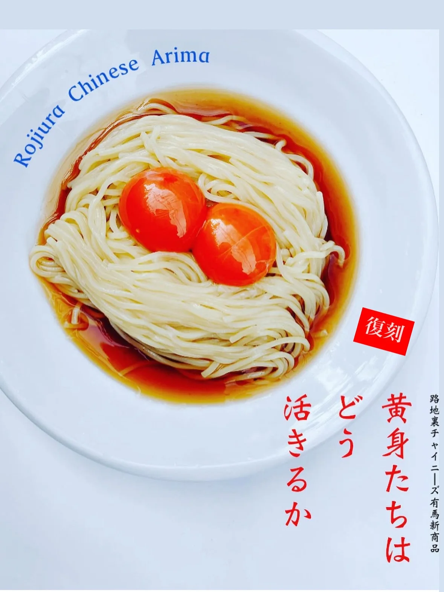
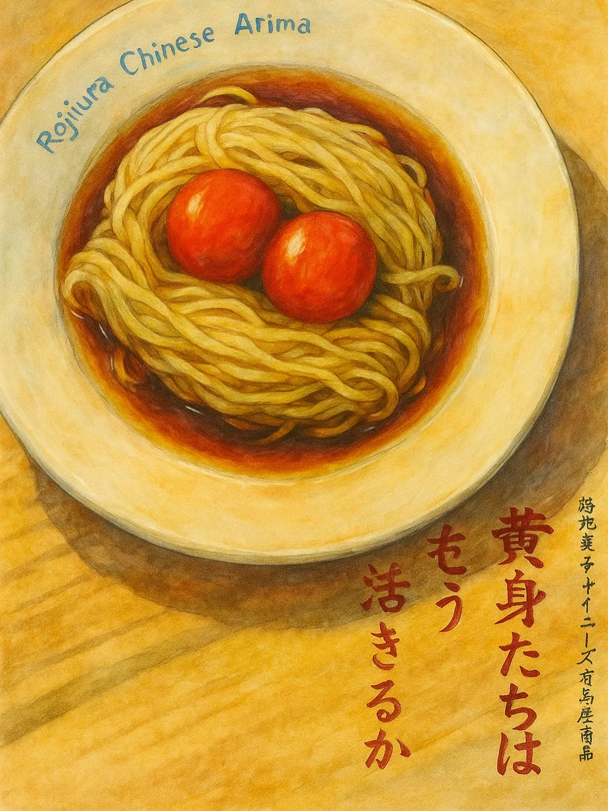

2025年6月18日
前料理長考案。


前料理長考案。 冷やしTK麺〜黄身たちはどう活きるか〜 外暑いんで本日より販売！！ 今年は、 龍麺と龍の卵を使った、 ダブルドラゴン仕様！！ 暑さにやられた方、 お待ちしてますよ🐉 #中華バル#中華#中華料理#福島区グルメ#路地裏#路地裏チャイニーズ有馬#有馬#シュウマイ#麻婆豆腐 #きみたちはどう生きるか #まだ見ていない、、、、 #黄身たちはどう活きるか
2025年6月18日


前料理長考案。 冷やしTK麺〜黄身たちはどう活きるか〜 外暑いんで本日より販売！！ 今年は、 龍麺と龍の卵を使った、 ダブルドラゴン仕様！！ 暑さにやられた方、 お待ちしてますよ🐉 #中華バル#中華#中華料理#福島区グルメ#路地裏#路地裏チャイニーズ有馬#有馬#シュウマイ#麻婆豆腐 #きみたちはどう生きるか #まだ見ていない、、、、 #黄身たちはどう活きるか